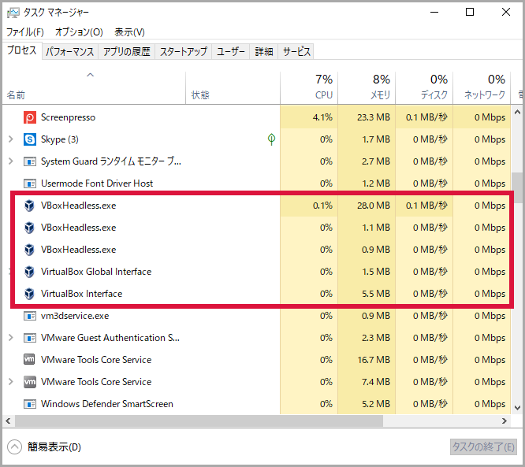

ウォークスルー¶
Vagrant コマンドを実際に使用し、CentOS 7 の仮想マシンの作成から廃棄までを実行します。 Box ファイルは CentOS 公式の "centos/7" を使用します。
Box ファイルをダウンロード¶
仮想マシンを作成するため Box ファイル "centos/7" をダウンロードします。今回は途中でプロバイダを確認されたので "3) virtualbox" を選択しました。
vagrant box list
vagrant box add centos/7
vagrant box list
PS C:\Users\user> vagrant box list
There are no installed boxes! Use `vagrant box add` to add some.
PS C:\Users\user>
PS C:\Users\user> vagrant box add centos/7
==> box: Loading metadata for box 'centos/7'
box: URL: https://vagrantcloud.com/centos/7
This box can work with multiple providers! The providers that it
can work with are listed below. Please review the list and choose
the provider you will be working with.
1) hyperv
2) libvirt
3) virtualbox
4) vmware_desktop
Enter your choice: 3
==> box: Adding box 'centos/7' (v1905.1) for provider: virtualbox
box: Downloading: https://vagrantcloud.com/centos/boxes/7/versions/1905.1/providers/virtualbox.box
box: Download redirected to host: cloud.centos.org
box:
==> box: Successfully added box 'centos/7' (v1905.1) for 'virtualbox'!
PS C:\Users\user>
PS C:\Users\user> vagrant box list
centos/7 (virtualbox, 1905.1)
PS C:\Users\user>
注釈
Box ファイルのダウンロードはファイルのサイズや実行環境などにより数分程度を要します。
Vagrantfile を作成¶
作成したフォルダーで Vagrantfile を作成します。
cd c:\vagrant\centos7
vagrant init centos/7
PS C:\Users\user> cd C:\vagrant\centos7\
PS C:\vagrant\centos7>
PS C:\vagrant\centos7> vagrant init centos/7
A `Vagrantfile` has been placed in this directory. You are now
ready to `vagrant up` your first virtual environment! Please read
the comments in the Vagrantfile as well as documentation on
`vagrantup.com` for more information on using Vagrant.
PS C:\vagrant\centos7>
フォルダー内に Vagrantfile が作成されました。
仮想マシンを起動¶
Box ファイルと Vagrant ファイルが揃ったので、仮想マシンを起動します。起動時のメッセージは仮想マシンの状態を示す内容が多く、接続時の参考になります。
vagrant up
PS C:\vagrant\centos7> vagrant up
Bringing machine 'default' up with 'virtualbox' provider...
==> default: Importing base box 'centos/7'...
==> default: Matching MAC address for NAT networking...
==> default: Checking if box 'centos/7' version '1905.1' is up to date...
==> default: Setting the name of the VM: centos7_default_1580909693985_35672
==> default: Clearing any previously set network interfaces...
==> default: Preparing network interfaces based on configuration...
default: Adapter 1: nat
==> default: Forwarding ports...
default: 22 (guest) => 2222 (host) (adapter 1)
==> default: Booting VM...
==> default: Waiting for machine to boot. This may take a few minutes...
default: SSH address: 127.0.0.1:2222
default: SSH username: vagrant
default: SSH auth method: private key
default:
default: Vagrant insecure key detected. Vagrant will automatically replace
default: this with a newly generated keypair for better security.
default:
default: Inserting generated public key within guest...
default: Removing insecure key from the guest if it's present...
default: Key inserted! Disconnecting and reconnecting using new SSH key...
==> default: Machine booted and ready!
==> default: Checking for guest additions in VM...
default: No guest additions were detected on the base box for this VM! Guest
default: additions are required for forwarded ports, shared folders, host only
default: networking, and more. If SSH fails on this machine, please install
default: the guest additions and repackage the box to continue.
default:
default: This is not an error message; everything may continue to work properly,
default: in which case you may ignore this message.
==> default: Rsyncing folder: /cygdrive/c/vagrant/centos7/ => /vagrant
PS C:\vagrant\centos7>
プロンプトが表示された時点で VirtualBox は起動していないように見えますが、ヘッドレスモード（バックグラウンドで動作）しています。
Oracle VM VirtualBox マネージャーを起動すると、仮想マシンが動作していることがわかります。
仮想マシンに接続¶
仮想マシンが起動したので ssh 接続します。公開鍵認証で接続するためパスワードの入力は不要です。
vagrant ssh
PS C:\vagrant\centos7> vagrant ssh
[vagrant@localhost ~]$
[vagrant@localhost ~]$ hostname
localhost.localdomain
[vagrant@localhost ~]$
[vagrant@localhost ~]$ ip a
1: lo: <LOOPBACK,UP,LOWER_UP> mtu 65536 qdisc noqueue state UNKNOWN group default qlen 1000
link/loopback 00:00:00:00:00:00 brd 00:00:00:00:00:00
inet 127.0.0.1/8 scope host lo
valid_lft forever preferred_lft forever
inet6 ::1/128 scope host
valid_lft forever preferred_lft forever
2: eth0: <BROADCAST,MULTICAST,UP,LOWER_UP> mtu 1500 qdisc pfifo_fast state UP group default qlen 1000
link/ether 52:54:00:8a:fe:e6 brd ff:ff:ff:ff:ff:ff
inet 10.0.2.15/24 brd 10.0.2.255 scope global noprefixroute dynamic eth0
valid_lft 86290sec preferred_lft 86290sec
inet6 fe80::5054:ff:fe8a:fee6/64 scope link
valid_lft forever preferred_lft forever
[vagrant@localhost ~]$
[vagrant@localhost ~]$ logout
Connection to 127.0.0.1 closed.
PS C:\vagrant\centos7>
仮想マシンを再起動¶
仮想マシンを再起動します。
vagrant reload
出力されたメッセージで shutdown → boot していることがわかります。
PS C:\vagrant\centos7> vagrant reload
==> default: Attempting graceful shutdown of VM...
==> default: Checking if box 'centos/7' version '1905.1' is up to date...
==> default: Clearing any previously set forwarded ports...
==> default: Clearing any previously set network interfaces...
==> default: Preparing network interfaces based on configuration...
default: Adapter 1: nat
==> default: Forwarding ports...
default: 22 (guest) => 2222 (host) (adapter 1)
==> default: Booting VM...
==> default: Waiting for machine to boot. This may take a few minutes...
default: SSH address: 127.0.0.1:2222
default: SSH username: vagrant
default: SSH auth method: private key
default: Warning: Connection reset. Retrying...
default: Warning: Connection aborted. Retrying...
default: Warning: Remote connection disconnect. Retrying...
==> default: Machine booted and ready!
==> default: Checking for guest additions in VM...
default: No guest additions were detected on the base box for this VM! Guest
default: additions are required for forwarded ports, shared folders, host only
default: networking, and more. If SSH fails on this machine, please install
default: the guest additions and repackage the box to continue.
default:
default: This is not an error message; everything may continue to work properly,
default: in which case you may ignore this message.
==> default: Rsyncing folder: /cygdrive/c/vagrant/centos7/ => /vagrant
==> default: Machine already provisioned. Run `vagrant provision` or use the `--provision`
==> default: flag to force provisioning. Provisioners marked to run always will still run.
PS C:\vagrant\centos7>
仮想マシンを停止（シャットダウン）¶
仮想マシンを停止（シャットダウン）します。
vagrant halt
PS C:\vagrant\centos7> vagrant halt
==> default: Attempting graceful shutdown of VM...
PS C:\vagrant\centos7>
仮想マシンをサスペンド¶
稼働中の仮想マシンをサスペンドします。
vagrant suspend
PS C:\vagrant\centos7> vagrant suspend
==> default: Saving VM state and suspending execution...
PS C:\vagrant\centos7>
Oracle VM VirtualBox マネージャーで確認すると、仮想マシンがサスペンドしていることがわかります。
仮想マシンをリジューム¶
サスペンド状態の仮想マシンをリジュームします。リジュームするコマンドは 2 つあります。どちらを実行しても結果は同じです。
vagrant up
PS C:\vagrant\centos7> vagrant up
Bringing machine 'default' up with 'virtualbox' provider...
==> default: Checking if box 'centos/7' version '1905.1' is up to date...
==> default: Resuming suspended VM...
==> default: Booting VM...
==> default: Waiting for machine to boot. This may take a few minutes...
default: SSH address: 127.0.0.1:2222
default: SSH username: vagrant
default: SSH auth method: private key
==> default: Machine booted and ready!
==> default: Machine already provisioned. Run `vagrant provision` or use the `--provision`
==> default: flag to force provisioning. Provisioners marked to run always will still run.
PS C:\vagrant\centos7>
vagrant resume
PS C:\vagrant\centos7> vagrant resume
==> default: Resuming suspended VM...
==> default: Booting VM...
==> default: Waiting for machine to boot. This may take a few minutes...
default: SSH address: 127.0.0.1:2222
default: SSH username: vagrant
default: SSH auth method: private key
==> default: Machine booted and ready!
==> default: Machine already provisioned. Run `vagrant provision` or use the `--provision`
==> default: flag to force provisioning. Provisioners marked to run always will still run.
PS C:\vagrant\centos7>
仮想マシンの状態を表示¶
仮想マシンの状態（ poweroff / running / saved ）を表示します。
vagrant status
vagrant up
vagrant status
vagrant suspend
vagrant status
PS C:\vagrant\centos7> vagrant status
Current machine states:
default poweroff (virtualbox)
The VM is powered off. To restart the VM, simply run `vagrant up`
PS C:\vagrant\centos7>
PS C:\vagrant\centos7> vagrant up
Bringing machine 'default' up with 'virtualbox' provider...
==> default: Checking if box 'centos/7' version '1905.1' is up to date...
==> default: Clearing any previously set forwarded ports...
==> default: Clearing any previously set network interfaces...
==> default: Preparing network interfaces based on configuration...
default: Adapter 1: nat
==> default: Forwarding ports...
default: 22 (guest) => 2222 (host) (adapter 1)
==> default: Booting VM...
==> default: Waiting for machine to boot. This may take a few minutes...
default: SSH address: 127.0.0.1:2222
default: SSH username: vagrant
default: SSH auth method: private key
default: Warning: Connection aborted. Retrying...
default: Warning: Remote connection disconnect. Retrying...
default: Warning: Connection reset. Retrying...
==> default: Machine booted and ready!
==> default: Checking for guest additions in VM...
default: No guest additions were detected on the base box for this VM! Guest
default: additions are required for forwarded ports, shared folders, host only
default: networking, and more. If SSH fails on this machine, please install
default: the guest additions and repackage the box to continue.
default:
default: This is not an error message; everything may continue to work properly,
default: in which case you may ignore this message.
==> default: Rsyncing folder: /cygdrive/c/vagrant/centos7/ => /vagrant
==> default: Machine already provisioned. Run `vagrant provision` or use the `--provision`
==> default: flag to force provisioning. Provisioners marked to run always will still run.
PS C:\vagrant\centos7>
PS C:\vagrant\centos7> vagrant status
Current machine states:
default running (virtualbox)
The VM is running. To stop this VM, you can run `vagrant halt` to
shut it down forcefully, or you can run `vagrant suspend` to simply
suspend the virtual machine. In either case, to restart it again,
simply run `vagrant up`.
PS C:\vagrant\centos7>
PS C:\vagrant\centos7> vagrant suspend
==> default: Saving VM state and suspending execution...
PS C:\vagrant\centos7>
PS C:\vagrant\centos7> vagrant status
Current machine states:
default saved (virtualbox)
To resume this VM, simply run `vagrant up`.
PS C:\vagrant\centos7>
仮想マシンを削除¶
仮想マシンを削除します。
vagrant destroy
PS C:\vagrant\centos7> vagrant destroy
default: Are you sure you want to destroy the 'default' VM? [y/N] y
==> default: Destroying VM and associated drives...
PS C:\vagrant\centos7>
Oracle VM VirtualBox マネージャーで確認すると、仮想マシンが削除されたことがわかります。
Box ファイルを削除¶
ダウンロードした Box ファイル "centos/7" を削除します。
vagrant box list
vagrant box remove centos/7
vagrant box list
PS C:\vagrant\centos7> vagrant box list
centos/7 (virtualbox, 1905.1)
PS C:\vagrant\centos7>
PS C:\vagrant\centos7> vagrant box remove centos/7
Box 'centos/7' (v1905.1) with provider 'virtualbox' appears
to still be in use by at least one Vagrant environment. Removing
the box could corrupt the environment. We recommend destroying
these environments first:
default (ID: ec6eabdbc2834c4c813ae0bde08edc95)
Are you sure you want to remove this box? [y/N] y
Removing box 'centos/7' (v1905.1) with provider 'virtualbox'...
PS C:\vagrant\centos7>
PS C:\vagrant\centos7> vagrant box list
There are no installed boxes! Use `vagrant box add` to add some.
PS C:\vagrant\centos7>